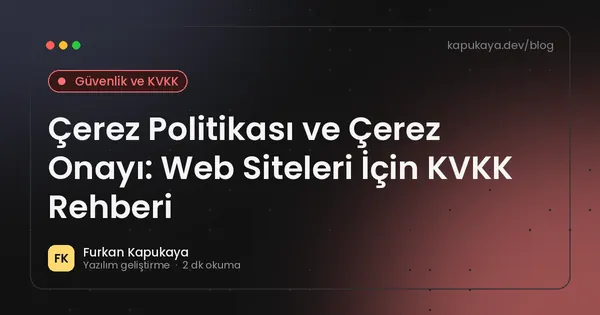
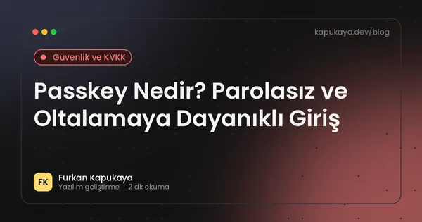
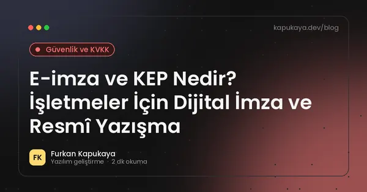
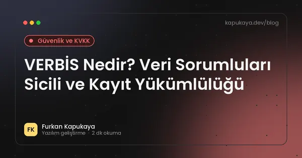
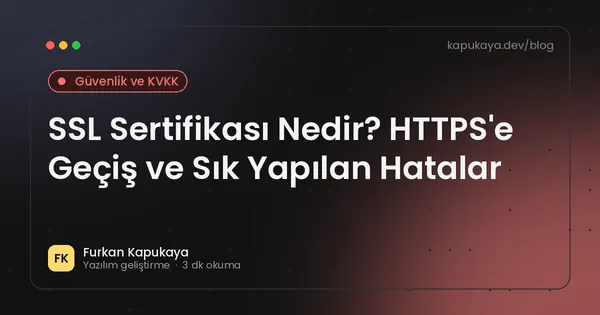
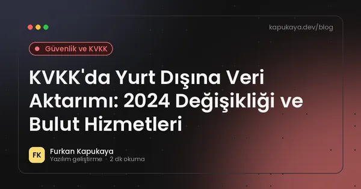

Güvenlik ve KVKK
Web ve uygulama güvenliği, KVKK uyumu, veri ihlali yönetimi, siber güvenlik mevzuatı ve güvenli kimlik doğrulama.
17 yazı

Çerez Politikası ve Çerez Onayı: Web Siteleri İçin KVKK Rehberi
Web sitelerinde zorunlu, analitik ve pazarlama çerezlerinin ayrımı, KVKK Çerez Uygulamaları Rehberi'ne göre açık rıza, reddetme seçeneği, çerez politikası içeriği ve teknik uygulama.
Yazıyı oku
Passkey Nedir? Parolasız ve Oltalamaya Dayanıklı Giriş
Passkey'in çalışma mantığı, açık anahtarlı kriptografi, parola ve SMS koduna göre avantajları, cihazlar arası senkronizasyon ve web uygulamalarına passkey desteği eklemek.
Yazıyı oku
Siber Güvenlik Kanunu (7545): İşletmeler İçin Temel Bilgiler
19 Mart 2025'te yürürlüğe giren 7545 sayılı Siber Güvenlik Kanunu'nun kapsamı, Siber Güvenlik Başkanlığı'nın yetkileri, bildirim yükümlülükleri, Temmuz 2026 değişiklikleri ve işletmelerin hazırlığı.
Yazıyı oku
E-imza ve KEP Nedir? İşletmeler İçin Dijital İmza ve Resmî Yazışma
Güvenli elektronik imza, mobil imza, nitelikli elektronik sertifika ve Kayıtlı Elektronik Posta (KEP) kavramları, hukuki geçerlilik, kullanım alanları ve yazılımlara e-imza entegrasyonu.
Yazıyı oku
Fidye Yazılımına (Ransomware) Karşı İşletmeler Nasıl Korunur?
Fidye yazılımlarının işletmelere nasıl bulaştığı, 3-2-1 yedekleme kuralı, değiştirilemez yedekler, yetki sınırlama, güncellemeler, çalışan farkındalığı ve saldırı anında yapılacaklar.
Yazıyı oku
HTTP Güvenlik Başlıkları: CSP, HSTS ve Diğerleri
Web sitelerini XSS, tıklama korsanlığı ve protokol düşürme saldırılarına karşı koruyan Content-Security-Policy, HSTS, X-Content-Type-Options, Referrer-Policy ve Permissions-Policy başlıklarının kullanımı.
Yazıyı oku
KVKK Veri İhlali Bildirimi: 72 Saatte Ne Yapılmalı?
Kişisel veri ihlali yaşandığında KVKK kapsamında Kurul'a 72 saat içinde bildirim, ilgili kişilerin bilgilendirilmesi, ihlal müdahale planı ve yazılım tarafında alınacak önlemler.
Yazıyı oku
VERBİS Nedir? Veri Sorumluları Sicili ve Kayıt Yükümlülüğü
Veri Sorumluları Sicil Bilgi Sistemi'nin amacı, kayıt yükümlülüğünün kimleri kapsadığı, kayıt sırasında istenen bilgiler, kişisel veri envanteri ve kayıttan muaf olanların yükümlülükleri.
Yazıyı oku
Oltalama (Phishing) Saldırıları: Çalışanlar İçin Farkındalık Rehberi
Sahte e-posta, SMS ve QR kodlarla yapılan oltalama saldırılarının belirtileri, sahte fatura ve CEO dolandırıcılığı örnekleri, işletmelerin alabileceği teknik ve kurumsal önlemler.
Yazıyı oku
SSL Sertifikası Nedir? HTTPS'e Geçiş ve Sık Yapılan Hatalar
SSL/TLS sertifikasının ne işe yaradığı, DV, OV ve EV farkları, ücretsiz sertifikalar, HTTPS'e geçiş adımları, HSTS ve karışık içerik sorunları.
Yazıyı oku
SQL Injection Nasıl Önlenir? Güvenli Veritabanı Erişimi
SQL injection açığının nedeni, parametreli sorgular, ORM kullanımı, en az yetki ilkesi, girdi doğrulama ve .NET uygulamalarında güvenli veritabanı erişimi için pratik öneriler.
Yazıyı oku
OWASP Top 10 (2025) Nedir? Web Uygulamalarında En Kritik 10 Risk
OWASP Top 10 2025 listesindeki erişim kontrolü, yanlış yapılandırma, tedarik zinciri, enjeksiyon ve hata yönetimi risklerinin açıklaması ve korunma yolları.
Yazıyı oku
KVKK Uyumlu Web Sitesi Nasıl Olmalı? Formlar, Çerezler ve Aydınlatma Metni
Web sitelerinde KVKK kapsamında aydınlatma metni, açık rıza, çerez tercihi, iletişim formları, veri güvenliği ve yurt dışı aktarım konularında genel rehber.
Yazıyı oku
İki Faktörlü Doğrulama (2FA) Nedir? Hesapları Korumanın En Etkili Yolu
İki faktörlü doğrulamanın çalışma mantığı, SMS, doğrulama uygulaması, güvenlik anahtarı ve passkey yöntemlerinin karşılaştırması ve işletmeler için uygulama önerileri.
Yazıyı oku
KVKK'da Yurt Dışına Veri Aktarımı: 2024 Değişikliği ve Bulut Hizmetleri
7499 sayılı Kanun ile 1 Haziran 2024'te değişen yurt dışına kişisel veri aktarımı kuralları, yeterlilik kararı, standart sözleşme ve bildirim süresi, bulut ve SaaS kullanan işletmeler için pratik değerlendirme.
Yazıyı oku
KVKK İlgili Kişi Başvuruları: Verimi Silin Diyen Müşteriye Ne Yapılmalı?
KVKK kapsamında ilgili kişinin hakları, başvuru yöntemleri, 30 günlük cevap süresi, kimlik doğrulama, silme ve düzeltme talepleri ile yazılımlarda başvuruları yönetme önerileri.
Yazıyı oku
KOBİ'ler İçin Siber Güvenlik Kontrol Listesi: 15 Temel Adım
Küçük ve orta ölçekli işletmelerin hesap güvenliği, yedekleme, güncellemeler, cihaz yönetimi, e-posta güvenliği, çalışan farkındalığı ve olay müdahalesi için uygulayabileceği temel siber güvenlik adımları.
Yazıyı oku
Aramanızla eşleşen yazı bulunamadı. Farklı bir kelime deneyin veya tüm yazıları gösterin.